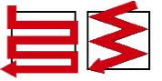
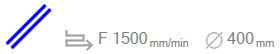
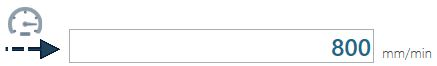
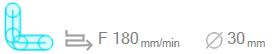
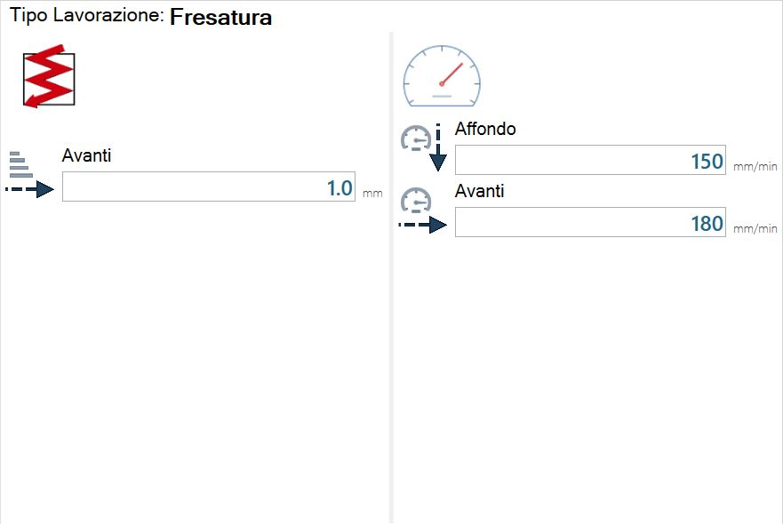
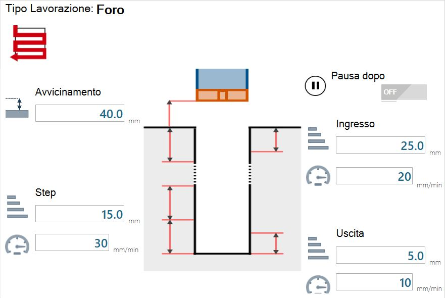
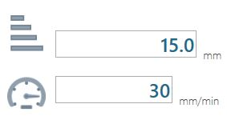

Beim Öffnen des Bedienfelds „Plattenparameter“ wird der Bildschirm mit den Bearbeitungsparametern angezeigt, über den der Bediener die Bearbeitungsdaten verwalten kann.
Die Bearbeitungsdaten können über das Parameterbedienfeld eingestellt und geändert werden.

Verwaltung des ausgewählten Materials
Im oberen Bereich des Bedienfelds „Bearbeitungsparameter der Platte“ befinden sich einige Elemente zur Materialverwaltung:

Nachfolgend werden die Elemente dieses Bereichs der Bearbeitungsparameter der Platte erläutert.
 | Ausgewähltes Material |
 | Schaltfläche Neues Material erstellen |
 | Schaltfläche zum Bedienfeld Materialverwaltung |
 | Stärke des ausgewählten Materials |
Neues Material hinzufügen
In diesem kleinen grafischen Fenster kann der Name eines neuen Materials zusammengestellt werden:

Wenn die Erstellung des neuen Materials bestätigt wird, wird dieses automatisch ausgewählt.
Die Parameter und die Materialstärke werden entsprechend aktualisiert.
Bedienfeld Materialverwaltung öffnen
In diesem Bedienfeld können die Materialien verwaltet werden:

 | Suchleiste |
 | Filter entfernen |
Material entfernen | |
 | Material duplizieren |
Material bearbeiten |
Bearbeitungsart auswählen
Die Auswahl der Bearbeitungsart steuert den Inhalt des Fensters zur Parameterverwaltung.

Für jede Bearbeitungsart werden in der entsprechenden Vorschau der ausgewählte Zustellmodus, die Schnittgeschwindigkeit im Vorlauf (Eintauch-/Eintrittsgeschwindigkeit bei der Bearbeitungsart Bohrung) und der Werkzeugdurchmesser angezeigt.
Durchgangsart
 | Volldurchgang |
 | Stufendurchgang / Spiraldurchgang |
Bearbeitungsarten
Linear

Volldurchgang

Stufendurchgang

Beschreibung der Zustellparameter
 | Vorwärts |
 | Rückwärts |
 | Letzter |
Beschreibung der Geschwindigkeitsparameter
 | Eintauchen |
 | Vorwärts |
 | Rückwärts |
| Letzter |
 | Schnitte beschleunigen |
 | Schnitte verlangsamen |
Bei Zustellungen und Geschwindigkeiten können die Parameter „Rückwärts“ und „Letzter“ vorhanden oder nicht vorhanden sein oder es kann nur einer der beiden vorhanden sein.
Normalerweise werden diese Optionen bei der Installation des Programms festgelegt und entsprechend der Bearbeitung des Kunden ausgewählt.
Diese Optionen können geändert werden, wenn eine andere Bearbeitungsweise bevorzugt wird; hierzu den Donatoni-Kundendienst kontaktieren.
Bogen

Stufendurchgang

Gehrung

Volldurchgang

Stufendurchgang

Beschreibung der Zustellparameter
  | Schnitt mit Antastung (aktiviert / deaktiviert) |
Fräsen

Volldurchgang

Stufendurchgang und Spiraldurchgang


Bohrung

Volldurchgang

Stufendurchgang

Ausführung der Bearbeitung mit Stufendurchgang:
Die Maschine fährt mit maximaler Geschwindigkeit an das Material heran, bis der im Parameter ANNÄHERUNG angegebene Abstand zum Material erreicht ist.
Die Anzahl der Schritte wird berechnet als:
Materialstärke geteilt durch Schrittstärke
gegebenenfalls aufgerundet
Die Maschine beginnt, sich mit Bearbeitungsgeschwindigkeit zu bewegen.
Wenn der Wert des Parameters EINTRITTSSCHRITT eingestellt ist (ungleich und größer als null), bearbeitet die Maschine mit der im zweiten Feld EINTRITT eingestellten Geschwindigkeit, bis die im Feld EINTRITTSSCHRITT eingestellte Entfernung erreicht ist.
Die Maschine führt die im zweiten Punkt berechneten Schritte mit Schrittgeschwindigkeit aus.
Nach jedem Schritt (einschließlich des ersten) fährt die Maschine mit maximaler Geschwindigkeit auf die Materialhöhe zurück und anschließend mit maximaler Geschwindigkeit bis kurz vor den Beginn des nächsten Schritts.
Wenn der Parameter AUSTRITTSSCHRITT eingestellt ist (ungleich und größer als null), bearbeitet die Maschine mit der im zweiten Feld SCHRITT festgelegten Geschwindigkeit, bis die im ersten Feld AUSTRITT festgelegte Entfernung erreicht ist.
Der restliche Schritt wird mit AUSTRITTSgeschwindigkeit ausgeführt.
Beschreibung der Bohrparameter mit Stufendurchgang
 | Annäherungshöhe |
 | Schritt |
 | Eintritt |
 | Ausgang |
 | Pause danach |
Schnittparameter ändern
Die zuvor beschriebenen Parameter für Scheibe, Fräser und Kernbohrer können geändert werden, sofern der Benutzer zu ihrer Verwendung berechtigt ist.
Um festzulegen, für welches Werkzeug die Parameter geändert werden sollen, muss eines durch Drücken der Schaltfläche im rechten Bereich des Bedienfelds „Werkzeug auswählen“ ausgewählt werden.
 | Schnittparameter ändern |
Durch Drücken dieser Schaltfläche wird ein Fenster angezeigt, das für jedes vorhandene Material eine gespeicherte Parameterkonfiguration enthält. Die Ergebnisse hängen außerdem von der ausgewählten Bearbeitungsart ab.
Es wird ein Fenster „Schnittparameter ändern“ ähnlich dem folgenden Beispielbild geöffnet:

Unten links im Bedienfeld „Schnittparameter ändern“ befindet sich eine anfangs leere Textleiste, über die ein Suchfilter angewendet werden kann.
Die Schaltfläche rechts neben der Leiste wird nur aktiviert, wenn Text in der Leiste vorhanden und damit ein Suchfilter angewendet ist. Durch Drücken wird der Filter gelöscht und die Textleiste geleert.
Untere Leiste
Die untere Leiste des Bedienfelds Plattenparameter sieht ähnlich wie folgt aus:

Diese Leiste besteht aus folgenden Elementen:
Scheibenvorschau | |
 | Fräser-/Bohrervorschau |
 | Werkzeugbedienfeld |